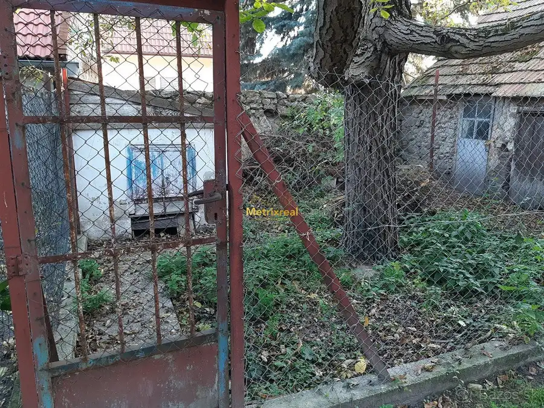

Kompletne zrekonštruovaný 1,5-izbový byt s klimatizáciou – Petržalka
Petržalka, Bratislava
- Poschodie0.
O nehnuteľnosti
RK Metrixreal ponúka so súhlasom majiteľa na predaj 1,5-izbový byt / dvojgarsónku s výmerou 36 m² na Osuského ulici v obľúbenej bratislavskej Petržalke.
Byt sa nachádza na 10. poschodí z 12 v zrekonštruovanom bytovom dome s dvoma novými výťahmi. Vyššie poschodie prináša príjemný výhľad, dostatok svetla a zároveň väčšie súkromie.
Byt je kompletne zariadený a pripravený na okamžité bývanie.
ZÁKLADNÉ INFORMÁCIE
Typ: 1,5-izbový byt / dvojgarsónka
Výmera: 36 m²
Lokalita: Bratislava – Petržalka, Osuského ulica
Poschodie: 10. z 12
Výťahy: 2 nové
Stav: kompletne zrekonštruovaný
Zariadenie: kompletne zariadený
Klimatizácia: áno
Pivnica: pivničná kobka
Internet: optické pripojenie
Plyn: v byte nie je
PREMYSLENÁ DISPOZÍCIA
Pri rekonštrukcii bola dispozícia bytu prakticky upravená tak, aby vznikol samostatný priestor na spanie a zároveň zostala zachovaná vzdušná denná časť.
Kuchyňa bola presunutá do obývacej izby, čím sa pôvodný priestor kuchyne využil ako samostatná spálňa.
Spálňa je vybavená posteľou a vstavanou skriňou, ktorá poskytuje dostatok úložného priestoru. Obývacia izba je prepojená s modernou kuchynskou časťou a vytvára príjemný priestor na každodenné bývanie.
KOMPLETNÁ REKONŠTRUKCIA
Byt prešiel kompletnou rekonštrukciou vrátane:
novej elektroinštalácie vrátane káblov, ističov, zásuviek a svietidiel,
nových podláh,
nových omietok a maľoviek,
bezpečnostných vchodových dverí,
kompletne zrekonštruovanej kúpeľne,
kuchynskej linky vyrobenej na mieru,
klimatizácie.
Kuchyňa je kompletne vybavená spotrebičmi:
chladnička, sklokeramická varná doska, elektrická rúra, umývačka riadu, nerezový drez s batériou a digestor.
Byt sa predáva vrátane kompletného zariadenia podľa fotografií, takže nový majiteľ môže bývanie využívať bez potreby ďalších investícií.
ĎALŠIE BENEFITY
✓ kompletne zrekonštruovaný interiér
✓ prakticky vytvorená samostatná spálňa
✓ vstavaná skriňa
✓ klimatizácia
✓ pivničná kobka
✓ plastové okná
✓ interiérové žalúzie a sieťky
✓ optický internet
✓ bez plynu v byte
✓ kompletné zariadenie
✓ príjemný výhľad z vyššieho poschodia
✓ zrekonštruovaný bytový dom
✓ dva nové výťahy
PETRŽALKA – VŠETKO NA DOSAH
Lokalita ponúka výbornú kombináciu zelene, občianskej vybavenosti a dopravnej dostupnosti.
Priamo pred bytovým domom sa nachádza zastávka Romanova, odkiaľ je pohodlné spojenie do ostatných častí Bratislavy. Veľkou výhodou je aj električkové spojenie v Petržalke, ktoré umožňuje rýchlu cestu do centra mesta.
V pešej dostupnosti nájdete potraviny, lekáreň, reštaurácie, školy, škôlky a plaváreň.
Pre aktívny oddych je veľkým benefitom blízkosť Chorvátskeho ramena. Obľúbené jazero Draždiak je približne 15 minút pešo, čo ponúka možnosti na prechádzky, šport aj letný relax.
PRE KOHO JE BYT VHODNÝ?
Byt je ideálnou voľbou pre jednotlivca alebo pár, ktorí hľadajú moderné bývanie bez nutnosti rekonštrukcie. Vďaka praktickej dispozícii a kompletnému zariadeniu je zároveň zaujímavou možnosťou aj ako investičný byt na prenájom.
ZAUJAL VÁS TENTO BYT?
Ak hľadáte kompletne zrekonštruovaný a zariadený byt v Petržalke, s klimatizáciou, samostatným priestorom na spanie, výbornou dostupnosťou MHD a kompletnou občianskou vybavenosťou v okolí, táto ponuka môže byť práve pre Vás.
Neváhajte nás kontaktovať pre viac informácií alebo si dohodnite osobnú obhliadku.
KONTAKT PRE OBHLIADKU
Ing. Ľubor Nôta – realitný maklér
Tel.:
E-mail:
Metrixreal s.r.o.
Drieňová 34, 821 02 Bratislava – Ružinov
E-mail:
Tel.:
Parametre
| Dátum zverejnenia | 7. 10. 2026 |
|---|---|
| Poschodie | prízemie |
Kde to je
Mohlo by Vás zaujímať

Rodinné domy10 263 000 €Rodinný dom s pozemkom, hospodárskou budovou a ďalšou bytovou jednotko Svätý Jur 94 m² RK Metrixreal ponúka so súhlasom majiteľa na predaj rodinný dom na Bratislavskej ulici vo Svätom Jure, ktorý ponúka okrem samotného domu aj ďalšie… Nebytové priestory 1 424 €WESTEND TOWER | PATRÓNKA | Svetlá rohová kancelária 58,7 m² s panorama Lamač 58.72 m²8. podlažie Realitná kancelária Metrixreal Vám na základe poverenia majiteľa ponúka na prenájom komfortný, reprezentatívny kancelársky priestor s výmerou 58,72…